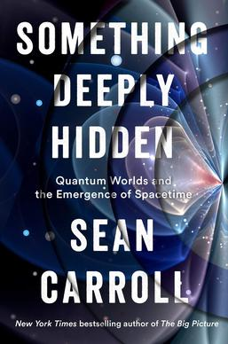

(Audio) Something Deeply Hidden, by Carroll
Saturday October 24, 2026
In Shape, Ellenberg recommended Something Deeply Hidden as “a great nontechnical primer in the mathematics underlying quantum physics,” but didn't mention that it's a many-worlds partisan presentation. It's a lot like What Is real? but with a very clear answer offered up—and I'll grant it has some pretty good explanations. I like Carroll enough that I could see reading more from him. I also think his belief in the many-worlds interpretation is unsupportable.
The title of the book, Something Deeply Hidden, is taken from an Einstein quote:
A wonder of this kind I experienced as a child of four or five years when my father showed me a compass. That this needle behaved in such a determined way did not at all fit in the kind of occurrences that could find a place in the unconscious world of concepts (efficacy produced by direct “touch”). I can still remember—or at least believe I can remember—that this experience made a deep and lasting impression upon me.
Something deeply hidden had to be behind things. (pages 281-282)
Magnets are weird. Fields are weird. I think it's easy to forget how wild the real world is. “The Force” in Star Wars is only weirder than the magnetic force by degrees.
Carroll is saying that the thing that's deeply hidden is other branches of the universal wave function—the “other worlds” of which there are many.
The upcoming Everything Is Fields has a title much more in line with my recommendation to Communicate Immediately.
Fields are weird.
As far as I can tell, Carroll really is serious about believing that the quantum wave function is literally real.
I'm slowed down by just how bizarre this is, but I think his presentation has helped me understand not just his but also other people's beliefs which I hadn't properly understood before.
My old buddy Kantor called it “Information Mechanics.” Carroll quotes the famous Wheeler “it from bit” but prefers “it from qubit.” These folks seem to seriously believe that the stuff of the universe, the real-real that-which-is, is information. For Carroll, it is specifically the wave function. He believes a function exists! Not just Plato-style, that a function exists in a realm of ideals, but that the function exists and is the universe. (Okay, maybe you could argue it's not so different from the Plato style, as for example in Lockhart's explanation, but I don't think it's a perfect fit either.)
Carroll references the 1984 “Particles do not exist” paper, and I'm not trying to argue that particles exist as such. (I was reminded of Wilczek on quasiparticles.) But surely believing that the wave function is ontologically “real” is a huge map-is-the-territory error.
Where I come out, I think, is with Meadows in Thinking in Systems: “Everything we think we know about the world is a model.” In philosophy of science, it seems like this view is called Epistemic Structural Realism, though perhaps people argue about the details. For Kant, it seems like this view is called noumenal agnosticism. Going back to the Greeks, maybe it's called acatalepsy.
There is precedent for taking mathematical theories seriously. For example, Dirac had an equation that made it seem like there were positrons, and then people observed positrons. But there are lots of mathematical theories that make lots of untestable predictions, and I don't feel at all compelled to believe that any of them are literally real—not the predictions, not the theories.
You don't need quantum theory to come up against the unknowability of reality. The Greeks managed it. Point-like particles certainly don't really make sense, for instance. Never mind the fallibility of the senses; there's the infinite regress of perceiving things via senses at all: you can't perceive a thing itself.
It certainly helps force a reckoning when you face a theory so deeply different from intuitive physics as quantum theory is, though. To come out of that by deciding that the theory itself, the mathematical model, is reality... I think this is silly.
Carroll seems good-natured enough about it though. He mentions that many-worlds people are sometimes called “psi-ontologists” (psi, “Ψ,” is the symbol for the wave function) and this is very funny. He mentions that QBists think many-worlds is “the reductio ad absurdum of reifying the quantum state,” and I tend to agree.
So while I really didn't think I'd come out of this liking the Copenhagen interpretation, I think there's an interpretation of the Copenhagen interpretation in which it's not just sloppy and stupid, but noumenal-agnostic and strictly model-based. “Shut up and calculate” because we acknowledge our limitations and know that we can't truly know the nature of reality, but we can try to make predictions about what we'll see.
Many of the various interpretations don't really come out seeming so different:
- Copenhagen: Observed macroscopic systems have particular states.
- Many-worlds: Macroscopic systems decohere to particular states.
- Spontaneous collapse: Macroscopic systems have so many particles that they're very likely to quickly settle particular states.
It's super annoying that Copenhagen talks about “observation” so much, inviting weird consciousness discussions, but that might as well just be a lack of clarity in exposition.
To bring up the cat: Even in Copenhagen, as I want to interpret it, the cat is macroscopic and either alive or dead but never both.
Regardless: Maybe a never-collapsing wave function describes things well, and maybe it doesn't, but I sure don't see a compelling reason to believe that the wave function “is real.”
Decoherence. So much seems to hang on exactly what this is. I don't think the book does a good job explaining it. Here's my best current understanding:
If you have an electron that's half-up/half-down, you can express that in a little local wave function. If you then do an up/down experiment, you get a macroscopic system that's “half-up/half-down” and while you could, it's silly to keep track of that in a big wave function: you can treat the up side as practically separate from the down side now. As two separate worlds.
How exactly this works mathematically, I'm not quite sure. I'm especially unclear about continuous things, like position, or time to decay.
I'm also not especially convinced that this resolves the observation problem, in the sense that it seems like some external rule quietly dictates that I find myself in exactly one “world” though there are many... (Possibly this concern is related to the preferred basis problem?)
I liked Carroll's treatment of Heisenberg uncertainty. He used spin up/down versus left/right instead of (in addition to) position/momentum. He said spin up can be expressed as equal parts spin left/right, and that it's a choice of basis issue.
I want this to be a good explanation, but I have to admit I hadn't thought of position/momentum as basis issues... they're operators, right? Measurement changes the wavefunction? But then, I guess measuring up/down changed the wavefunction (to be up, here) so maybe it's not so different?
Maybe it is all basis issues, the same way uncertainty is sometimes explained as position/momentum being Fourier transforms of one another...
Yup, seems fine...
There's a good deal of fuss over probability. Carroll likes to call it “self-locating uncertainty” because you just don't know which world you're in. I think we might be better off with the “probability is a mathematical concept” philosophy of Gelman et al.
Part three of the book is about Carroll's attempts to get space (and maybe time) out of quantum theory, using entanglement entropy. It reminded me of Wolfram Physics a little bit. There was also entropic gravity and something about the holographic principle. It all seemed a bit of a tease for unfinished theory.
